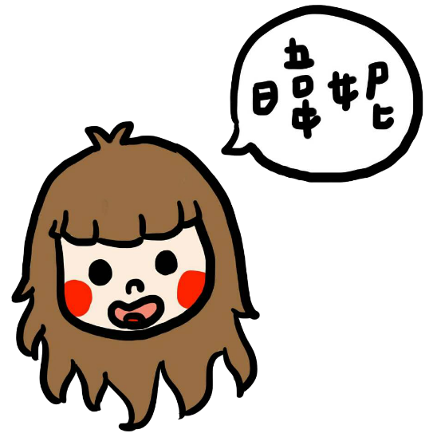

心得:
藉由這次的活動，讓組員彼此更加的認識也更加熟悉，網頁製作的過程當然也更順手!無論是美工導覽
、word製作部分等等，每位組員都全力以赴，
也互相幫忙!這是很值得欣慰的~~希望大家能繼續一起合心完成[九九香芋]的網頁製作!有一個好的成果。

透過這次的專題課，我才發現原來組員分工合作是一件那麼重要的事情，我覺得我很幸運因為我的組員們
都做好自己分內的工作，而且都做得非常好。
還有再實地參訪九份的時候，替驗當地的風土民情跟各種美食文化，這是一個很有意義的經驗，請讓人深刻的了解九份的歷史風光和地方特
色。
九份是一個很特別的地方，不管是它的歷史背景還是當地的文化，都令人難以忘懷，深深的體會。
有幸能夠參加這樣的一個比賽，考驗各組的團隊能力，為了製作這份作品我們一起玩，一起思考，一起努
力。
過程是很有意義的，讓我重新學習到了很多的知識，也很謝謝同伴的一路陪同。
我們的主題是有關歷史古蹟，我們探訪的地方是九份老街，能參訪九份老街我非常開心，
因為我是住在九份的當地人，對於九份其實本身已經了解不少，如今可以更加瞭解，親自去探訪當地民宿，並且寫成網頁讓大家了解自己的故鄉，
我非常的喜歡這個作品，在探訪過程中，走過幾百次的路，吃了吃過無數次的當地美食，卻有任務在身，更仔細的去看，去品嘗，我覺得這是很有意義的旅程，能讓
大家了解自己的家鄉是件非常有成就感的事，也很開心能跟組員們完成這個作品。
這次去九份，受益良多。上次來到九份應該是國小的時候，有3,4年沒來過了。
各種美食吃透透，而且看了許多的景點，尤其是晚上的夜景，簡直美不勝收。
有一點讓我驚訝的是，去到九份，感覺好像不是在台灣，現在許多的大陸客，外國人來到台灣幾乎都會去九份，人潮多到不行。
也藉著這次的機會，了解到團隊精神跟分工合作是多麼的重要，很謝謝有機會讓我參與這次的活動。
網站的建立，需要很多步驟，要先決定主題，再去蒐集資料， 然後還要排版，需要很多人一起合作。很感謝有組員們的幫忙。